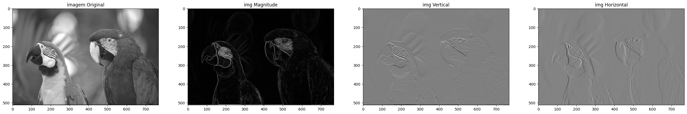
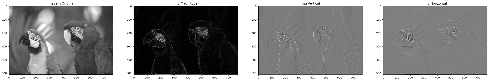

Aula 6:
A patir da convolução de filtros e a aplicação de um gradiente é possivel aplicar os filtros de Roberts, Prewitt e Sobel para a detecção de bordas em uma imagem.
import sys
print(sys.executable)import matplotlib.pyplot as plt
import numpy as np
from skimage.color import rgb2gray
from scipy import ndimageroberts_cross_v = np.array( [[1, 0 ],
[0,-1 ]] )
roberts_cross_h = np.array( [[ 0, 1 ],
[ -1, 0 ]] )image = Image.open(r"kodim23.png")
image = rgb2gray(image) #Roberts
vertical = ndimage.convolve(image, np.array([[1,0],[0,-1]]) )
horizontal = ndimage.convolve(image, np.array([[0,1],[-1,0]]) )
magnitude = np.sqrt( np.square(horizontal) + np.square(vertical))
fig, axs = plt.subplots(1, 4, figsize=(32, 32))
axs[0].set_title('imagem Original')
axs[0].imshow(image, cmap=plt.cm.gray)
axs[1].set_title('img Magnitude')
axs[1].imshow(magnitude, cmap=plt.cm.gray)
axs[2].set_title('img Vertical')
axs[2].imshow(vertical, cmap=plt.cm.gray)
axs[3].set_title('img Horizontal')
axs[3].imshow(horizontal, cmap=plt.cm.gray)
plt.show()
#Prewitt
vertical = ndimage.convolve(image, np.array([[1,1,1],[0,0,0],[-1,-1,-1]]) )
horizontal = ndimage.convolve(image, np.array([[-1,0,1],[-1,0,1],[-1,0,1]]) )
magnitude = np.sqrt( np.square(horizontal) + np.square(vertical))
fig, axs = plt.subplots(1, 4, figsize=(32, 32))
axs[0].set_title('imagem Original')
axs[0].imshow(image, cmap=plt.cm.gray)
axs[1].set_title('img Magnitude')
axs[1].imshow(magnitude, cmap=plt.cm.gray)
axs[2].set_title('img Vertical')
axs[2].imshow(vertical, cmap=plt.cm.gray)
axs[3].set_title('img Horizontal')
axs[3].imshow(horizontal, cmap=plt.cm.gray)
plt.show()
#Sobel
vertical = ndimage.convolve(image, np.array([[1,0,-1],[2,0,-2],[1,0,-1]]) )
horizontal = ndimage.convolve(image, np.array([[1,2,1],[0,0,0],[-1,-2,-1]]) )
magnitude = np.sqrt( np.square(horizontal) + np.square(vertical))
fig, axs = plt.subplots(1, 4, figsize=(32, 32))
axs[0].set_title('imagem Original')
axs[0].imshow(image, cmap=plt.cm.gray)
axs[1].set_title('img Magnitude')
axs[1].imshow(magnitude, cmap=plt.cm.gray)
axs[2].set_title('img Vertical')
axs[2].imshow(vertical, cmap=plt.cm.gray)
axs[3].set_title('img Horizontal')
axs[3].imshow(horizontal, cmap=plt.cm.gray)
plt.show()
Referencias:
Materal de Aula
Convolução de filtros